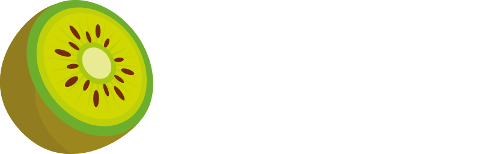

Web Developer | Jun 2018 - Aug 2018
Kiwi S.R.L.
Internship experience in front-end and back-end web development. Active participation in the development of an online management system.
Context
An internship focused on web application development and collaboration on an online management system.
Contribution
Participation in front-end and back-end activities and development of features for the management system.
Highlights
First professional experience in web development, with exposure to both client-side and server-side work.
Experience images
Images and descriptions of the work.